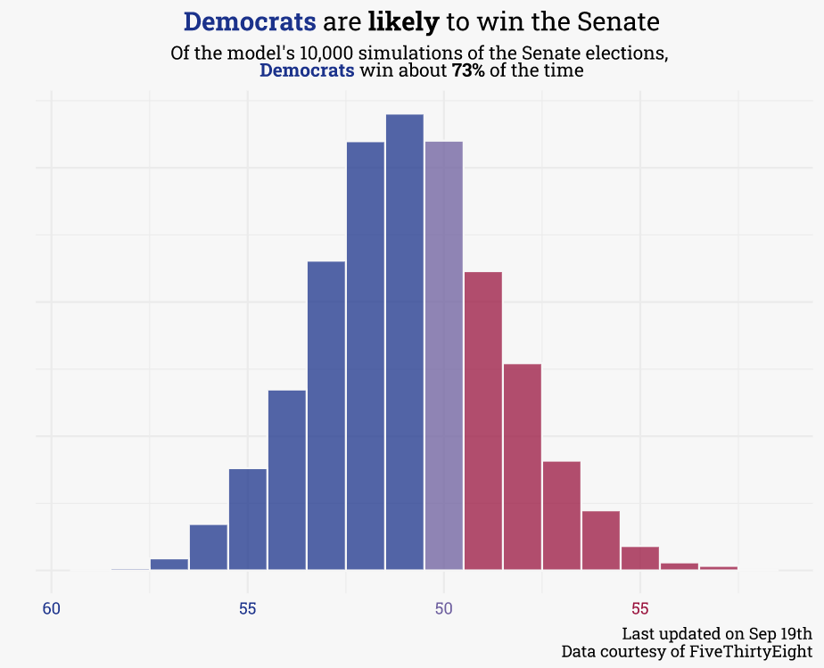
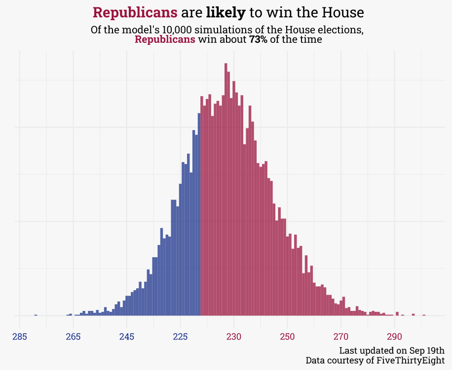

For those who aren’t glued to electoral politics, Labor Day typically marks the beginning of election season. Primaries are settled, pollsters stop sampling all adults to prioritize likely voters, and campaigns kick into high-gear. Labor Day also marks the release of my 2022 midterm forecast:
{{% tweet "1566971975821565953" %}}At the time of this writing, Democrats are favored to keep the senate while Republicans are favored to flip the House:


The most up-to-date information for each chamber (as well as individual races) can be found on the respective pages for the Senate and House. There is also a forecast for each Governor’s race.
In this post, I’ll walk through how the model works and point out some of its shortcomings. I’ll cover the broad strokes here, but for those who are interested in digging into the source code, I’ve released the model publicly on github.
Hi! I’ll put extra math-y details in note blocks, like this. You can skip over these without missing out on any of the important stuff, this just gives some extra details for dorks like me.
The first step taken is to filter out non-competitive races and candidates. Non-competitive, used here, doesn’t mean “races that aren’t close” but instead means “races that literally don’t have any competition.” In each race, only the chances of the top democrat/republican (or independent that would caucus with one of the major parties) are modeled. In uncontested races or races between two members of the same party, the controlling party’s probability of winning is set to 100%.
Removing third parties and intra-party races allows us to model each candidate’s projected voteshare via a beta distribution, which is useful for modeling proportional data of binary outcomes.
The next step is to estimate the polling average in each race. For races with polls, this can be done directly, but most races (especially in the House), aren’t polled. For these races, the poll average is constructed from the generic congressional ballot (GCB) and the seat’s partisan voter index (PVI). For example, for a R+5 seat, if the GCB is at D+1 the seats poll average will be R+4.
The poll model is really simple, but does increase slightly with complexity as more polls come in/as election day draws nearer. When there are three or fewer polls, a simple average is used. When there are between 4 and 6 polls, a linear model is used (i.e.,
lm(pct ~ date)). When there are more than 6 polls, a loess model is used (loess(pct ~ date, span = span)). Thespanparameter is scaled by the number of days between the polling period and election day — as election day approaches,spanmoves from1to0.75.
Polls are a great tool and the most reliable predictor, but not the only one! With the polling average in each seat, the model is trained to estimate the outcome based on polls, partisanship (via PVI), incumbency, and a blend of demographics.
# here's the actual model itself!
# estimate: poll average,
# poll_bucket: has this race been polled, y/n?
# incumbent: incumbent party - democrat/republican/neither?
elections_model <-
gamlss(result ~ estimate * poll_bucket + pvi + incumbent + white + black + hispanic + aapi,
sigma.formula = ~ log10(num_polls + 2),
family = BE(),
data = elections_train)The final step is to simulate! To do so, 10,000 possible voteshare outcomes are generated each day for each race. The probability of any candidate winning is simply the percentage of simulations where the candidate has the greater voteshare. Similarly, the probability that each party controls each chamber is simply the percentage of simulations where that party controls a majority of seats (though Democrats only need 50 seats for control of the Senate, as Vice-President Harris serves as the tie-breaking vote).
In each of the simulations, a bit of polling error is introduced. This introduced error is normally distributed around 0. There’s been quite a bit of debate recently regarding the direction of that error (some folks think we should assume polls are undercounting Republicans, given the errors in 2016 and 2020), but the consensus amongst the modeling at FiveThirtyEight and the Economist is to set the average polling bias to 0. Each prediction is a single draw from one of the 10,000 possible distributions — when aggregated for each candidate we can estimate the 80% quantile range for their expected voteshare.
While I’d love to believe that my model is professional quality, the truth is that this is represents my best (amateur) attempt at putting together a forecast in my limited free time. Of the model’s shortcomings, the three most egregious (in my opinion) are listed below:
The poll model is probably too simple. I’d spent a lot of time putting together a custom poll models for the generic ballot average and presidential approval average, both of which are fairly complex and adjust for pollster bias, survey size, sample population, and recency. While these are good enough poll models on their own, they take quite a bit of time to update. Extending this out to all the races in the midterms would mean that daily updates may take hours, which is a non-starter. So instead, I’ve opted for the simpler poll aggregate described above. This simplicity means that it’s a bit jumpy and a bit too bullish on recent polls.
This is a “now-cast”. Some models allow poll averages to drift between the current day and election day via random walks. This model, however, doesn’t do so — the forecast can really be thought of as the chance each party has if elections were held today with the information available today.
This is neither a Bayesian, nor a hierarchical model. In this model, the poll average and voteshare forecast are actually two separate models — ideally, these should both be roped-up in an overarching Bayesian model since they are both part of the same data generation process. Furthermore, this model assumes that all races are fully independent, which is wrong. House races in Georgia, for example, are not independent from other house races in Georgia. Ideally, we’d partially pool information across different races — this model doesn’t do that.
Despite all this, I believe this relatively simple model results in an overall directionally correct forecast — you should view it in concert with a host of other reputable forecasts (listed below). I’d encourage you to check back intermittently to see how the race for each chamber progresses!